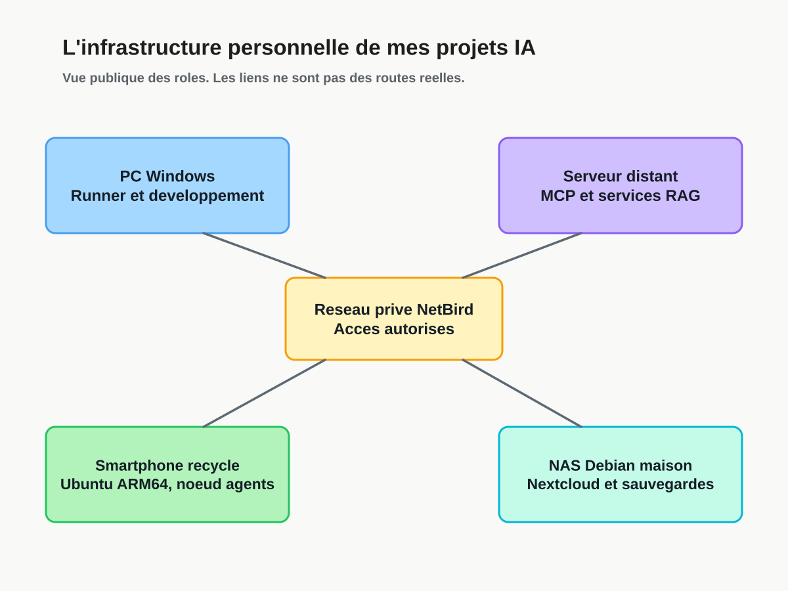
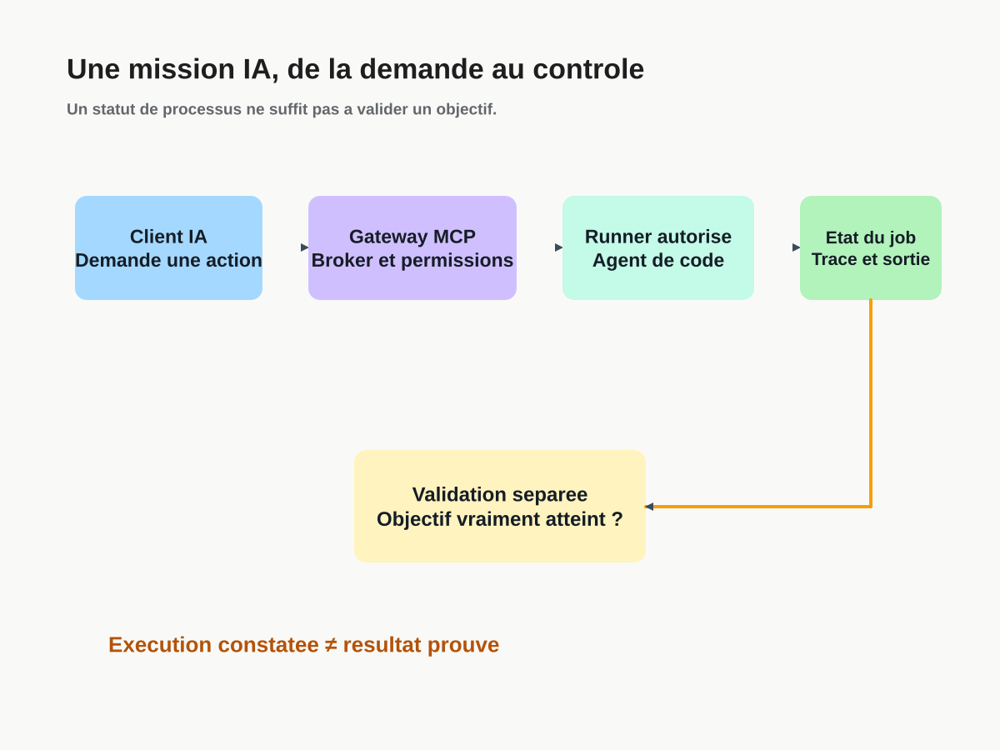
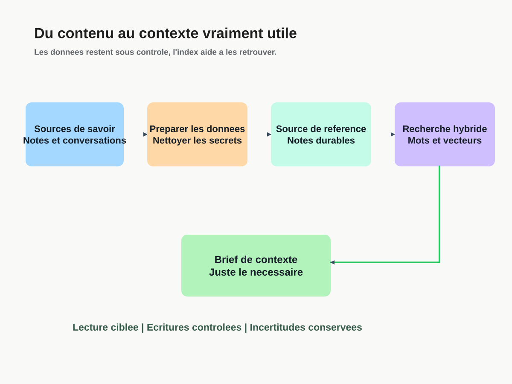

Windows PC
My laptop runs workers that can launch coding agents in authorized workspaces.
Runner observed online at the latest check.TECHNICAL ARCHITECTURE · PUBLIC OVERVIEW
I build and administer an environment where coding agents, MCP services, RAG memory and storage each have a distinct role. This document deliberately simplifies connections to protect private network details.
Conceptual documentation, not a port inventory or a live status dashboard. Documented roles and experimental components are distinguished.
01 / TOPOLOGY
A Windows laptop controls and runs agents, a remote server hosts services, a repurposed Galaxy S9+ runs Ubuntu ARM64 for AI tools, and a DIY Debian NAS handles storage and synchronization. NetBird and authorized tunnels enable private connectivity.

My laptop runs workers that can launch coding agents in authorized workspaces.
Runner observed online at the latest check.A remote machine runs MCP gateways, mission coordination and knowledge-related services.
Hosted architecture with no high availability guarantee.An old smartphone now runs headless Ubuntu ARM64 and coding tools such as OpenCode and Codex.
Physical hardware with resource limits, not a cloud VPS.A repurposed Lenovo laptop hosts Nextcloud, file sharing and versioned backup configuration.
Backups configured and occasionally verified; no claim of complete protection.02 / AGENTS
An AI client calls an authenticated MCP gateway. A coordinator stores the mission and sends work to an authorized runner. The runner launches a coding agent in a defined workspace. A successful process exit does not automatically verify the mission objective.

03 / MEMORY AND RAG
Conversations can be sanitized before publishing. Durable notes remain authoritative. Keyword and semantic retrieval then select useful passages instead of flooding each context window with an entire history.

04 / CONTROLS
Exposed MCP tools are scoped and allowlisted. Coding agents retain the privileges of their underlying runtime.
The private QEMU sandbox experiments with per-task VMs. On the observed host, TCG emulation replaces KVM acceleration.
Retrieving a note does not authorize mutation. Write intentions, permissions and conflicts are handled separately.
Semantic PR review is advisory. Deterministic tests and policy checks remain independent.
05 / DOCUMENTATION
The three diagrams are published as scalable vector images and editable Excalidraw files. An architecture diagram is not a security audit. For public components, source code and README documents are the most inspectable evidence.
This public overview deliberately omits private addresses, hostnames, access keys, ports and network policies.
Explore more projects ↗